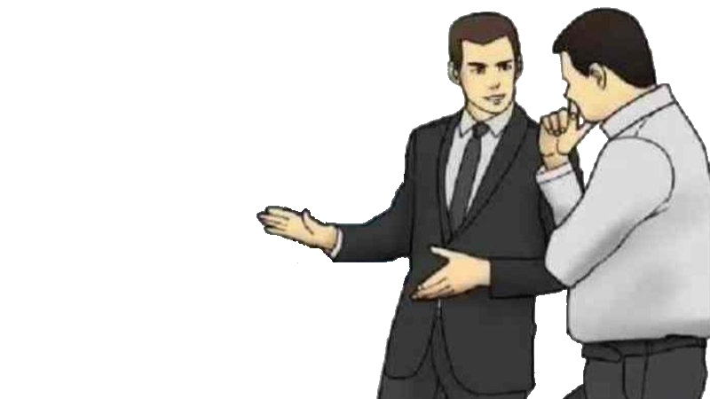

past
the history behind the Loss meme
Loss is a meme derived from the early-mid 2000s webcomic "Ctrl+Alt+Del," which was centered around main character and gamer Ethan. The character was portrayed as a hallmark nerd who followed expected stereotypes, with characteristics that would be considered misogynistic in today's times. The comic also involves Ethan's best friend, as well as his girlfriend, Lilah.
The author and artist of the comic released a 4-panel comic titled 'Loss,' during which Ethan hears news of his girlfriend's miscarriage. The first panel is of him bursting through the hospital doors. The second panel is of him speaking to the receptionist. The third panel is of him speaking to the doctor. The fourth panel is of him standing over his devastated girlfriend, who is laying in a hospital bed.
Effectively, the figures portrayed in these four panels create these silhouttes: | || || |_ which became the ultimate format of the meme.
present
Loss's revival today
Today, Loss is experiencing a renaissance as it returns to pop culture. Many have posted their own modified versions of the meme, oftentimes hiding the aforementioned four figures in obscure images, which birthed the phrase, "Is this Loss?". Below is a gallery of examples of Loss.
future
a prediction of Loss's lifespan
All great memes must die. Despite Loss's unexpectedly long lifespan, its popularity is already dwindling, thanks to the sharp rise in a new meme known as the Car Salesman. In the future, it can be expected that Loss will slowly disappear from the public eye once more, just as it did nearly a decade ago.
